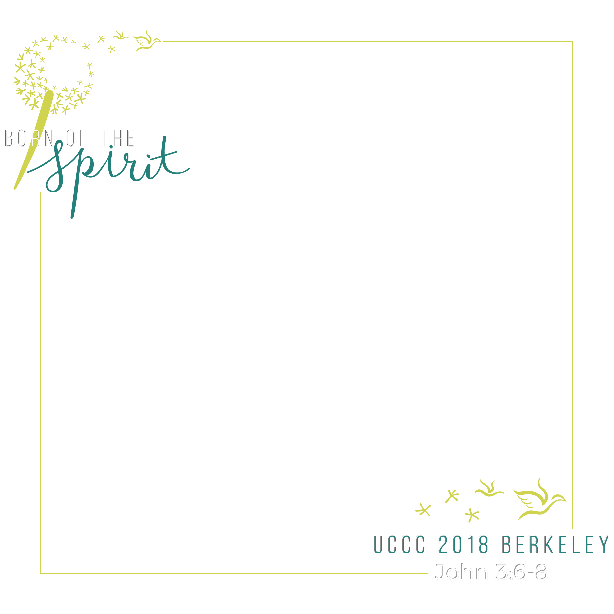

Nametag made in Photoshop used for a Catholic Retreat I led at Newman Hall-Holy Spirit Parish
Nametag made in Illustrator used for the University Catholic Conference of California 2018

Facebook watermark made in Photoshop for the University Catholic Conference of California 2018
Front side of flyer made in Illustrator for the University Catholic Conference of California 2018
Back side of flyer made in Illustrator for the University Catholic Conference of California 2018
Front and back cover of the brochure made in Photoshop used for the University Catholic Conference of California 2018
Snapchat filter made in Photoshop used for the University Catholic Conference of California 2018
GIF representing the vertigo shot in film made in Premiere Pro
Cello model made in Autodesk Maya
Face morph coded in Python by plotting points, doing Delaunay triangulation, then manipulating the image through intperolation of corresponding points of the two faces.